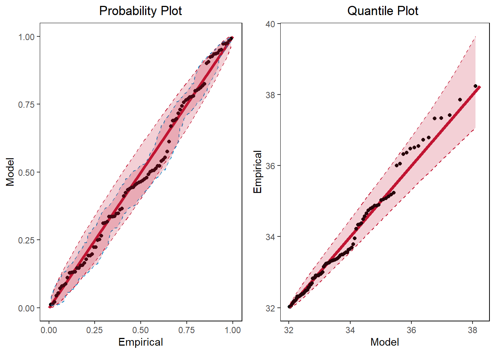

Explore extremes
Return level plots
Exercise recreating Fig. 3.1 from Coles’ book. Possible typo in the book as the \(x\)-axis should be \(- \log(-\log(1-p))\) and not \(\log(-\log(1-p))\).
# set parameters
mu <- rep(0,3)
sigma <- rep(1,3)
xi <- c(-0.2,0,0.2)
U <- runif(10000) %>% sort()
z_p_neg <- c()
z_p_pos <- c()
z_p_0 <- c()
# calculate z_p for different values of xi
for (i in seq_along(U)) {
z_p_neg[i] <- -(1- (-log(U[i]))^(-xi[1]) )*(sigma[1]/xi[1])+ mu[1]
z_p_pos[i] <- -(1- (-log(U[i]))^(-xi[3]) )*(sigma[3]/xi[3])+ mu[3]
z_p_0[i] <- -log(-log(U[i]))*sigma[2]+mu[2]
}
z_p <- data.frame(U,z_p_neg,z_p_0,z_p_pos)
z_p %>% ggplot() + geom_line(aes(x=-log(-log(U)),y=(z_p_neg)),color="#009ada",linewidth=1.5) + geom_line(aes(x=-log(-log(U)),y=(z_p_0)),linewidth=1.5) + geom_line(aes(x=-log(-log(U)),y=(z_p_pos)),color="#c11432",linewidth=1.5) +
xlab(TeX("$-\\log(y_p)$")) +
ylab(TeX("$z_p$" )) + theme_minimal() +
annotate("text", x = 8, y = 0, label = TeX("$\\xi=-.2$")) +
annotate("text", x = 8, y = 10, label = TeX("$\\xi=0$")) +
annotate("text", x = 8, y = 25, label = TeX("$\\xi=.2$")) +
theme_bw() +
theme(panel.spacing = unit(2, "lines"),
panel.grid.major = element_blank(),
panel.grid.minor = element_blank(),
strip.background = element_blank(),
panel.border = element_rect(colour = "black", fill = NA))Warning in is.na(x): is.na() applied to non-(list or vector) of type
'expression'
Warning in is.na(x): is.na() applied to non-(list or vector) of type
'expression'
Warning in is.na(x): is.na() applied to non-(list or vector) of type
'expression'
Maximum likelihood fitting of the GEV distribution
Try fitting GEV from the ismev package.
data(venice)
gev.fit(venice[,2])$conv
[1] 0
$nllh
[1] 201.6732
$mle
[1] 103.7734080 12.3260517 -0.2326299
$se
[1] 1.89770997 1.31099392 0.08489683df <- data.frame(x=1:(365*nrow(venice)), y=rnorm(n = 365*nrow(venice),mean = 0,sd = 1))
df$block_max <- rep(FALSE,365*nrow(venice))
for (i in 1:nrow(venice)) {
df$block_max[df$y==(max(df$y[(365*(i-1)+1):(365*i)]))] <- TRUE
}
ggplot(df) + geom_point(aes(x=x,y=y,color=block_max)) + scale_color_manual(values=c("black","#C11432"))
fit <- gev.fit(df$y[df$block_max==TRUE])$conv
[1] 0
$nllh
[1] 26.96747
$mle
[1] 2.8586588 0.4169591 -0.3255368
$se
[1] 0.06752645 0.05126335 0.13435688fit$mle[1] 2.8586588 0.4169591 -0.3255368Compare the fit with the kernel smoothed density estimate.
g <- function(x) {
1/fit$mle[2] * (1 + fit$mle[3]*((x - fit$mle[1])/fit$mle[2] ) )^(-(1+1/fit$mle[3]))* exp(-(1 + fit$mle[3]*((x - fit$mle[1])/fit$mle[2] ) )^(-1/fit$mle[3]) )
}
x_fit <- seq(1,4,0.01)
y_fit <- c()
for (i in seq_along(x_fit)) {
y_fit[i] <- g(x_fit[i])
}
df_fit <- data.frame(x_fit,y_fit)
ggplot() + geom_density(df %>% filter(block_max==TRUE),mapping=aes(y)) + geom_line(df_fit,mapping = aes(x_fit,y_fit),color='#c11432') + theme_minimal()
Try same fit with Venice data.
venice <- data.frame(x=seq_along(venice[,2]),y=venice[,2])
fit <- gev.fit(venice[,2])$conv
[1] 0
$nllh
[1] 201.6732
$mle
[1] 103.7734080 12.3260517 -0.2326299
$se
[1] 1.89770997 1.31099392 0.08489683fit$mle[1] 103.7734080 12.3260517 -0.2326299x_fit <- seq(70,200,1)
y_fit <- c()
for (i in seq_along(x_fit)) {
y_fit[i] <- g(x_fit[i])
}
df_fit <- data.frame(x_fit,y_fit)
ggplot() + geom_density(venice,mapping=aes(y)) + geom_line(df_fit,mapping = aes(x_fit,y_fit),color='#c11432') + theme_minimal()Warning: Removed 44 rows containing missing values or values outside the scale range
(`geom_line()`).
Plot Gumbel distribution function using PIT
mu <- 1
sig <- 1
U <- runif(1000)
z <- mu - sig*log(-log(U))
df <- data.frame(z,U)
ggplot(df) + geom_point(aes(x=z,y=U))
Try Port Pirie sea-levels diagnostic plots
Port Pirie data not available in the package, maybe try with Venice sea-levels data?
data(portpirie)
x=gev.fit(portpirie)$conv
[1] 0
$nllh
[1] -4.339058
$mle
[1] 3.87474692 0.19804120 -0.05008773
$se
[1] 0.02793211 0.02024610 0.09825633gev.diag(x)
Try to recreate the likelihood function.
The function gets longer as initial values of the parameters are either pre-specified or calculated from the data. Therefore, gev_fit.R script contains the function.
x <- portpirie
gev.diag(gev_fit(x))Warning in log(sig): NaNs producedWarning in log(1 + xi * ((x - mu)/sig)): NaNs produced
Warning in log(1 + xi * ((x - mu)/sig)): NaNs produced
# the function could return very high values
# that cannot be minimum negative likelihood like 10^6Success! The plotting function works with the likelihood function.
GEV plot functions
Now, try to replicate the four plots given above, starting with the probability plot. The model probability is a straight line, but empirical data will deviate from this line.
# calculate GEV inverse CDF
GEV_inv <- function(U,mle) {
mu <- mle[1]
sig <- mle[2]
xi <- mle[3]
z <- (sig/xi) * ((-log(U))^(-xi)-1) + mu
return(z)
}
# calculate GEV CDF
GEV <- function(z,mle) {
mu <- mle[1]
sig <- mle[2]
xi <- mle[3]
G <- c()
for (i in seq_along(z))
G[i] <- exp( -(1 + xi*((z[i]-mu)/sig) )^(-1/xi) )
return(G)
}Next is QQ plot. QQ plot compares two probability distributions by plotting their quantiles. In this example, it plots two GEV distributions with different parameters: empirical calculated though a formula used for the initial parameters in the optimisation and the model parameters (MLE).
GEV_QQ <- function(x) {
# empirical distribution estimates
sig_init <- sqrt(6 * var(x))/pi
mu_init <- mean(x) - 0.57722 * sig_init
xi_init <- 0.1
est_par <- c(mu_init,sig_init,xi_init)
# model (MLE) estimates
model_par <- gev_fit(x)$mle
# generate z using PIT for each case
q <- seq(from=1/(length(x)+1),to=length(x)/(length(x)+1),length.out=length(x)) #quantile
model <- GEV_inv(U=q,mle=model_par) #z generated from the model
est <- GEV_inv(U=q,mle=est_par) #z generated from GEV empirical estimates
dat <- x %>% sort()
return(data.frame(q=q,Model=model,Empirical=est,Data=dat))
}The plot shows that empirical estimates are good since it is almost linear but shape parameter is a bit off, hence the slight curve (is it really the shape parameter causing this or just sampling variance?).
Plot for UKCP data
Yearly maximum temperature data from the UKCP model.
# calculate yearly maxima over 81 years
uk_winter <- readRDS("data/uk_1999_2079_winter.RDS")
uk_spring <- readRDS("data/uk_1999_2079_spring.RDS")
uk_summer <- readRDS("data/uk_1999_2079_summer.RDS")
uk_autumn <- readRDS("data/uk_1999_2079_autumn.RDS")# combine to 1 and take only London
tmp <- c()
# for (i in 1:81) {
# tmp[((i-1)*360+1):(i*360)] <- c((uk_winter[uk_winter$is_location=="london",((90*(i-1))+7):((90*i)+6)] %>% as_vector),
# (uk_spring[uk_spring$is_location=="london",((90*(i-1))+7):((90*i)+6)] %>% as_vector),
# (uk_summer[uk_summer$is_location=="london",((90*(i-1))+7):((90*i)+6)] %>% as_vector),
# (uk_autumn[uk_autumn$is_location=="london",((90*(i-1))+7):((90*i)+6)] %>% as_vector))
# }
for (i in 1:81) {
tmp[((i-1)*360+1):(i*360)] <- c((uk_winter[uk_winter$is_location=="birmingham",((90*(i-1))+7):((90*i)+6)] %>% as_vector),
(uk_spring[uk_spring$is_location=="birmingham",((90*(i-1))+7):((90*i)+6)] %>% as_vector),
(uk_summer[uk_summer$is_location=="birmingham",((90*(i-1))+7):((90*i)+6)] %>% as_vector),
(uk_autumn[uk_autumn$is_location=="birmingham",((90*(i-1))+7):((90*i)+6)] %>% as_vector))
}
# calculate yearly maxima
x <- c()
for (i in 1:81) {
x[i] <- max(tmp[(360*(i-1)+1):(i*360)])
}
I <- seq_along(x)
gradient <- summary(lm(x~I))$coefficients[2,1]
shift <- c()
for (i in seq_along(x)) {
shift[i] <- x[i] - (i-1)*gradient
}
plot(I,x)
plot(I,shift)
# try shifting all the data with the corresponding yearly coefficients
# calculate yearly maxima
y <- tmp
I <- seq_along(y)
gradient <- summary(lm(y~I))$coefficients[2,1]
shift_tmp <- c()
for (i in seq_along(y)) {
shift_tmp[i] <- y[i] - (i-1)*gradient
}
plot(I,y)
plot(I,shift_tmp)
x <- shift # use annual maxima with removed trend
mle <- gev_fit(x)$mleWarning in log(1 + xi * ((x - mu)/sig)): NaNs produced
Warning in log(1 + xi * ((x - mu)/sig)): NaNs produced
Warning in log(1 + xi * ((x - mu)/sig)): NaNs produced
Warning in log(1 + xi * ((x - mu)/sig)): NaNs produced
Warning in log(1 + xi * ((x - mu)/sig)): NaNs produced
Warning in log(1 + xi * ((x - mu)/sig)): NaNs produced
Warning in log(1 + xi * ((x - mu)/sig)): NaNs produced
Warning in log(1 + xi * ((x - mu)/sig)): NaNs produced
Warning in log(1 + xi * ((x - mu)/sig)): NaNs produced
Warning in log(1 + xi * ((x - mu)/sig)): NaNs producedtemp <- data.frame(Temperature=sort(x))
# calculate upper and lower bounds for 95% CI to add to the plots
Ulow<-sapply(seq_along(x), function(i){qbeta(0.025, i, length(x)+1-i)})
Uup<-sapply(seq_along(x), function(i){qbeta(0.975, i, length(x)+1-i)})
Model <- temp %>% dplyr::select(Temperature) %>% mutate(Model=GEV(z=Temperature,mle=mle)) %>%
mutate(Ulow=Ulow) %>% mutate(Uup=Uup)
Empirical <- temp %>% dplyr::select(Temperature) %>% arrange(Temperature) %>% mutate(Empirical=row_number()/(nrow(temp)+1))
df <- temp %>% left_join(Empirical,by="Temperature") %>% left_join(Model,by="Temperature")
df %>% head() Temperature Empirical Model Ulow Uup
1 22.30078 0.01219512 0.007683862 0.0003125167 0.04452026
2 23.60745 0.02439024 0.035245958 0.0030043515 0.06687562
3 23.62295 0.03658537 0.035787263 0.0077040373 0.08636287
4 23.66938 0.04878049 0.037444590 0.0136170871 0.10444371
5 24.24000 0.06097561 0.062620822 0.0203448393 0.12163814
6 24.30527 0.07317073 0.066101775 0.0276683605 0.13820261p1 <- df %>% ggplot() + geom_segment(aes(x = 0, y = 0, xend = 1, yend = 1), color = "#C11432",size=1.2)+ geom_point(aes(x=Empirical,y=Model)) + geom_line(aes(x=Empirical,y=Uup),linetype="dashed", color="#C11432") + geom_line(aes(x=Empirical,y=Ulow), linetype="dashed", color="#C11432") +
geom_ribbon(aes(x=Empirical,ymin=Uup,ymax=Ulow), fill="#C11432", alpha=0.2)+
ggtitle("Probability Plot") + xlab("Empirical") + ylab("Model")Warning: Using `size` aesthetic for lines was deprecated in ggplot2 3.4.0.
ℹ Please use `linewidth` instead.df <- GEV_QQ(sort(x))%>% mutate(GEV_Ulow=qgev(p=Ulow,loc=mle[1],scale=mle[2],shape=mle[3])) %>% mutate(Ulow=Ulow) %>% mutate(Uup=Uup)%>% mutate(GEV_Uup=qgev(p=Uup,loc=mle[1],scale=mle[2],shape=mle[3]))Warning in log(1 + xi * ((x - mu)/sig)): NaNs produced
Warning in log(1 + xi * ((x - mu)/sig)): NaNs produced
Warning in log(1 + xi * ((x - mu)/sig)): NaNs produced
Warning in log(1 + xi * ((x - mu)/sig)): NaNs produced
Warning in log(1 + xi * ((x - mu)/sig)): NaNs produced
Warning in log(1 + xi * ((x - mu)/sig)): NaNs produced
Warning in log(1 + xi * ((x - mu)/sig)): NaNs produced
Warning in log(1 + xi * ((x - mu)/sig)): NaNs produced
Warning in log(1 + xi * ((x - mu)/sig)): NaNs produced
Warning in log(1 + xi * ((x - mu)/sig)): NaNs producedp2 <- df %>% ggplot() +
geom_segment(aes(x = min(x), y = min(x), xend = max(Model), yend = max(Data)), color = "#C11432",size=1.2,alpha=0.5)+
geom_point(aes(y=Data,x=Model)) + geom_line(aes(x=Model,y=GEV_Uup),linetype="dashed", color="#C11432") + geom_line(aes(x=Model,y=GEV_Ulow), linetype="dashed", color="#C11432") +
geom_ribbon(aes(x=Model,ymin=GEV_Uup,ymax=GEV_Ulow), fill="#C11432", alpha=0.2)+
ggtitle("Quantile Plot ") + ylab("Empirical") + xlab("Model")
grid.arrange(p1,p2,ncol=2)Warning in geom_segment(aes(x = 0, y = 0, xend = 1, yend = 1), color = "#C11432", : All aesthetics have length 1, but the data has 81 rows.
ℹ Please consider using `annotate()` or provide this layer with data containing
a single row.Warning in geom_segment(aes(x = min(x), y = min(x), xend = max(Model), yend = max(Data)), : All aesthetics have length 1, but the data has 81 rows.
ℹ Please consider using `annotate()` or provide this layer with data containing
a single row.
The next plot is return level plot.
df1 <- df
fit <- gev_fit(x)Warning in log(1 + xi * ((x - mu)/sig)): NaNs produced
Warning in log(1 + xi * ((x - mu)/sig)): NaNs produced
Warning in log(1 + xi * ((x - mu)/sig)): NaNs produced
Warning in log(1 + xi * ((x - mu)/sig)): NaNs produced
Warning in log(1 + xi * ((x - mu)/sig)): NaNs produced
Warning in log(1 + xi * ((x - mu)/sig)): NaNs produced
Warning in log(1 + xi * ((x - mu)/sig)): NaNs produced
Warning in log(1 + xi * ((x - mu)/sig)): NaNs produced
Warning in log(1 + xi * ((x - mu)/sig)): NaNs produced
Warning in log(1 + xi * ((x - mu)/sig)): NaNs producedf <- seq(0.999,0.01,-0.001)
z <- GEV_inv(U=f,mle=fit$mle)
df <- data.frame(p=f,z)
#f <- p
q <- gevq(fit$mle, 1 - f)
d <- t(gev.rl.gradient(a = fit$mle, p = 1 - f))
v <- apply(d, 1, q.form, m = fit$cov)
CI <- data.frame(u= q + 1.96 * sqrt(v),l=q - 1.96 * sqrt(v))
# add also 95% bootstrap interval
fit_boot <- data.frame(mu=numeric(),sig=numeric(),xi=numeric())
bf <- data.frame(f=f)
for (i in 1:100) {
# sample data
xs <- sample(x=x,size=length(x),replace=TRUE)
# fit GEV
fit <- gev.fit(x=xs,show=FALSE)
fit_boot[nrow(fit_boot) +1,] <- fit$mle
bf <- cbind(bf,GEV_inv(U=f,mle=fit$mle))
}
zu <- as.numeric(bf[,2:101] %>% apply(c(1),FUN=function(x) {quantile(x=x,p=0.975)}))
zl <- as.numeric(bf[,2:101] %>% apply(c(1),FUN=function(x) {quantile(x=x,p=0.025)}))
df <- df %>% mutate(zu=zu,zl=zl)
ggplot() +
geom_line(aes(x=-1/log(df$p),y=df$z)) +
geom_line(aes(x=-1/log(df$p),y=df$zu),col="#009ADA") +
geom_line(aes(x=-1/log(df$p),y=df$zl),col="#009ADA") +
geom_line(aes(x=-1/log(df$p),y=CI$u),col="#C11432",linetype="dashed") +
geom_line(aes(x=-1/log(df$p),y=CI$l),col="#C11432", linetype="dashed") +
geom_ribbon(aes(x=-1/log(df$p),ymin=CI$u,ymax=CI$l), fill="#C11432", alpha=0.2)+
geom_point(aes(x=-1/log(df1$q),y=df1$Data)) + coord_trans(x="log") +
scale_x_continuous( breaks=c(10,100,500,1000)) +
xlab("Return level (years)") +
ylab(TeX("$z_p$")) 
Try the same for GPD
u <- 32
x <- sort(shift_tmp[shift_tmp>u])
mle <- gpd.fit(x,threshold=u)$mle$threshold
[1] 32
$nexc
[1] 97
$conv
[1] 0
$nllh
[1] 152.7568
$mle
[1] 2.3368686 -0.2739422
$rate
[1] 1
$se
[1] 0.3455280 0.1110129# CI for xi
# f <- gpd.fit(x,threshold=u)
# c(f$mle[2]-qnorm(p=0.975)*f$se[2],f$mle[2]+qnorm(p=0.975)*f$se[2])
temp <- data.frame(Temperature=x)
# calculate GPD inverse CDF
GPD_inv <- function(mle,threshold,p) {
sig <- mle[1]
xi <- mle[2]
z <- threshold + (sig * (p^(-xi) - 1))/xi
return(z)
}
# calculate GPD CDF
GPD <- function(z,mle,threshold) {
sig <- mle[1]
xi <- mle[2]
G <- c()
for (i in seq_along(z))
G[i] <- 1 - (1 + (xi * (z[i] - threshold))/sig)^(-1/xi)
return(G)
}
GPD_QQ <- function(x,mle,threshold) {
# model (MLE) estimates
model_par <- mle
u <- threshold
# generate z using PIT for each case
q <-1- seq(from=1/(length(x)+1),to=length(x)/(length(x)+1),length.out=length(x)) #quantile
model <- GPD_inv(mle=model_par,threshold=u,p=q) #z generated from the model
# calculate upper and lower bounds for 95% CI to add to the plots
Ulow<-sapply(seq_along(x), function(i){qbeta(0.025, i, length(x)+1-i)})
Uup<-sapply(seq_along(x), function(i){qbeta(0.975, i, length(x)+1-i)})
Model <- temp %>% dplyr::select(Temperature) %>% mutate(Model=GEV(z=Temperature,mle=mle)) %>%
mutate(Ulow=Ulow) %>% mutate(Uup=Uup)
#est <- GEV_inv(U=q,mle=est_par) #z generated from GEV empirical estimates
dat <- x %>% sort()
return(data.frame(q=q,Model=model,Data=dat,Ulow=Ulow,Uup=Uup))
}
#Model <- temp %>% select(Temperature) %>% mutate(Model=GPD(z=Temperature,mle=mle,threshold=u))
# calculate upper and lower bounds for 95% CI to add to the plots
Ulow<-sapply(seq_along(x), function(i){qbeta(0.025, i, length(x)+1-i)})
Uup<-sapply(seq_along(x), function(i){qbeta(0.975, i, length(x)+1-i)})
Model <- temp %>% dplyr::select(Temperature) %>% mutate(Model=GPD(z=Temperature,mle=mle,threshold=u)) %>%
mutate(Ulow=Ulow) %>% mutate(Uup=Uup)
Empirical <- temp %>% dplyr::select(Temperature) %>% arrange(Temperature) %>% mutate(Empirical=row_number()/(nrow(temp)+1))
df <- temp %>% left_join(Empirical,by="Temperature") %>% left_join(Model,by="Temperature")
# add also 95% bootstrap interval
fit_boot <- data.frame(sig=numeric(),xi=numeric())
bf <- data.frame(x=x)
for (i in 1:100) {
# sample data
xs <- sort(sample(x=x,size=length(x),replace=TRUE))
# fit GEV
fit <- gpd.fit(x=xs,threshold=u,show = FALSE)
fit_boot[nrow(fit_boot) +1,] <- fit$mle
bf <- cbind(bf,GPD(z=xs,mle=fit$mle,threshold=u))
}
zu <- as.numeric(bf[,2:101] %>% apply(MARGIN = c(1),FUN=function(x) {quantile(x=x,p=0.975,na.rm=TRUE)}))
zl <- as.numeric(bf[,2:101] %>% apply(c(1),FUN=function(x) {quantile(x=x,p=0.025,na.rm=TRUE)}))
df <- df %>% mutate("zu"=zu) %>% mutate("zl"=zl)
df %>% head() Temperature Empirical Model Ulow Uup zu
1 32.02598 0.01020408 0.01107208 0.0002609743 0.03731564 0.03274062
2 32.02905 0.02040816 0.01237354 0.0025068298 0.05610415 0.05483742
3 32.04799 0.03061224 0.02038397 0.0064240475 0.07250215 0.07698476
4 32.10416 0.04081633 0.04385492 0.0113482726 0.08773178 0.08879940
5 32.12884 0.05102041 0.05404038 0.0169465019 0.10222747 0.10067602
6 32.17231 0.06122449 0.07178478 0.0230359973 0.11620330 0.10406585
zl
1 0.008658298
2 0.009313683
3 0.009793002
4 0.010348813
5 0.012114482
6 0.016227424p1 <- df %>% ggplot() + geom_segment(aes(x = 0, y = 0, xend = 1, yend = 1), color = "#C11432",size=1.5)+ geom_point(aes(x=Empirical,y=Model)) +
geom_line(aes(x=Empirical,y=Uup),linetype="dashed", color="#C11432") + geom_line(aes(x=Empirical,y=Ulow), linetype="dashed", color="#C11432") +
geom_line(aes(x=Empirical,y=zl), linetype="dashed", color="#009ADA") +
geom_line(aes(x=Empirical,y=zu), linetype="dashed", color="#009ADA") +
geom_ribbon(aes(x=Empirical,ymin=Uup,ymax=Ulow), fill="#C11432", alpha=0.2)+
geom_ribbon(aes(x=Empirical,ymin=zu,ymax=zl), fill="#C11432", alpha=0.2)+
ggtitle("Probability Plot") + xlab("Empirical") + ylab("Model")
df <- GPD_QQ(x=temp[,1],mle=mle,threshold=u) %>% mutate(GPD_Ulow=qgpd(p=Ulow,loc=u,scale=mle[1],shape=mle[2])) %>% mutate(Ulow=Ulow) %>% mutate(Uup=Uup)%>% mutate(GPD_Uup=qgpd(p=Uup,loc=u,scale=mle[1],shape=mle[2]))
x <- temp[,1]
p2 <- df %>% ggplot() +
geom_segment(aes(x = min(x), y = min(x), xend = max(x), yend = max(x)), color = "#C11432",size=1.5,alpha=0.5)+
geom_point(aes(y=Data,x=Model)) +
geom_line(aes(x=Model,y=GPD_Uup),linetype="dashed", color="#C11432") + geom_line(aes(x=Model,y=GPD_Ulow), linetype="dashed", color="#C11432") +
geom_ribbon(aes(x=Model,ymin=GPD_Uup,ymax=GPD_Ulow), fill="#C11432", alpha=0.2) + ggtitle("Quantile Plot ") + ylab("Empirical") + xlab("Model")
grid.arrange(p1,p2,ncol=2)Warning in geom_segment(aes(x = 0, y = 0, xend = 1, yend = 1), color = "#C11432", : All aesthetics have length 1, but the data has 97 rows.
ℹ Please consider using `annotate()` or provide this layer with data containing
a single row.Warning in geom_segment(aes(x = min(x), y = min(x), xend = max(x), yend = max(x)), : All aesthetics have length 1, but the data has 97 rows.
ℹ Please consider using `annotate()` or provide this layer with data containing
a single row.
df1 <- df
x <- shift_tmp
u <- 30
fit <- gpd.fit(x,threshold = u)$threshold
[1] 30
$nexc
[1] 212
$conv
[1] 0
$nllh
[1] 378.1977
$mle
[1] 2.8862224 -0.2759224
$rate
[1] 0.007270233
$se
[1] 0.26271321 0.06266633p <- seq(0.999,0.01,-0.001)
z <- GPD_inv(mle=fit$mle,threshold=u,p=p)
df <- data.frame(p,z)
a <- c(fit$rate,fit$mle)
u <- fit$threshold
n <- fit$n
la <- fit$rate
mat <- fit$cov
npy <- 360
dat <- x
xdat <- shift_tmp
eps <- 1e-06
a1 <- a
a2 <- a
a3 <- a
a1[1] <- a[1] + eps
a2[2] <- a[2] + eps
a3[3] <- a[3] + eps
jj <- seq(-1, 3.75 + log10(npy), by = 0.1)
m <- c(1/la, 10^jj)
q <- gpdq2(a[2:3], u, la, m)
d <- t(gpd.rl.gradient(a = a, m = m))
mat <- matrix(c((la * (1 - la))/n, 0, 0, 0, mat[1, 1], mat[1,
2], 0, mat[2, 1], mat[2, 2]), ncol = 3)
v <- apply(d, 1, q.form, m = mat)
plot(m/npy, q, log = "x", type = "n", xlim = c(0.1, max(m)/npy),
ylim = c(u, max(xdat, q[q > u - 1] + 1.96 * sqrt(v)[q >
u - 1])), xlab = "Return period (years)", ylab = "Return level",
main = "Return Level Plot")
lines(m[q > u - 1]/npy, q[q > u - 1])
lines(m[q > u - 1]/npy, q[q > u - 1] + 1.96 * sqrt(v)[q >
u - 1], col = 4)
lines(m[q > u - 1]/npy, q[q > u - 1] - 1.96 * sqrt(v)[q >
u - 1], col = 4)
nl <- n - length(dat) + 1
sdat <- sort(xdat)
points((1/(1 - (1:n)/(n + 1))/npy)[sdat > u], sdat[sdat >
u])
df <- data.frame(p= m[q > u - 1]/npy,z=(q[q > u - 1]) )
CI <- data.frame(p= m[q > u - 1]/npy,
l= (q[q > u - 1] - 1.96 * sqrt(v)[q >
u - 1]),
u= q[q > u - 1] + 1.96 * sqrt(v)[q >
u - 1])
df1 <- data.frame(q=(1/(1 - (1:n)/(n + 1))/npy)[sdat>u],
Data=sdat[sdat > u])
ggplot() +
xlim( c(0.3,1000)) +
geom_line(aes(x=df$p,y=df$z)) +
geom_line(aes(x=df$p,y=CI$u),col="#C11432",linetype="dashed") +
geom_line(aes(x=df$p,y=CI$l),col="#C11432", linetype="dashed") +
geom_ribbon(aes(x=df$p,ymin=CI$l,ymax=CI$u), fill="#C11432", alpha=0.2)+
geom_point(aes(x=df1$q,y=df1$Data)) + coord_trans(x="log") +
scale_x_continuous( breaks=c(10,100,500,1000),limits=c(0.3,1000)) +
xlab("Return level (years)") +
ylab(TeX("$z_p$")) Scale for x is already present.
Adding another scale for x, which will replace the existing scale.Warning: Removed 9 rows containing missing values or values outside the scale range
(`geom_line()`).
Removed 9 rows containing missing values or values outside the scale range
(`geom_line()`).
Removed 9 rows containing missing values or values outside the scale range
(`geom_line()`).
5.2 Maxima of stationary sequences
Simulate series \(X_i=\max (Y_{i-1}, Y_i)\) where \(Y\) has cdf \(F_Y(y)= \exp \left\{ -\frac{1}{(a+1)y} \right\}\) for different values of \(a\).
# set a
a <- 0
# generate from Y
U <- runif(50)
Y <- c()
for (i in 1:50) {
Y[i] <- -1/(log(U[i])*(a+1))
}
X <- Y[1]
for (i in 2:50) {
X[i] <- max(Y[i-1],Y[i])
}
df <- data.frame(X,Y,ite=1:50)
x <- ggplot(df) + geom_point(aes(x=ite, y=X))
y <- ggplot(df) + geom_point(aes(x=ite, y=Y))
grid.arrange(x,y,ncol=2)
# set a
a <- 1/3
# generate from Y
U <- runif(50)
Y <- c()
for (i in 1:50) {
Y[i] <- -1/(log(U[i])*(a+1))
}
X <- Y[1]
for (i in 2:50) {
X[i] <- max(Y[i-1],Y[i])
}
df <- data.frame(X,Y,ite=1:50)
x <- ggplot(df) + geom_point(aes(x=ite, y=X))
y <- ggplot(df) + geom_point(aes(x=ite, y=Y))
grid.arrange(x,y,ncol=2)
# set a
a <- 2/3
# generate from Y
U <- runif(50)
Y <- c()
for (i in 1:50) {
Y[i] <- -1/(log(U[i])*(a+1))
}
X <- Y[1]
for (i in 2:50) {
X[i] <- max(Y[i-1],Y[i])
}
df <- data.frame(X,Y,ite=1:50)
x <- ggplot(df) + geom_point(aes(x=ite, y=X))
y <- ggplot(df) + geom_point(aes(x=ite, y=Y))
grid.arrange(x,y,ncol=2)
# set a
a <- 1
# generate from Y
U <- runif(50)
Y <- c()
for (i in 1:50) {
Y[i] <- -1/(log(U[i])*(a+1))
}
X <- Y[1]
for (i in 2:50) {
X[i] <- max(Y[i-1],Y[i])
}
df <- data.frame(X,Y,ite=1:50)
x <- ggplot(df) + geom_point(aes(x=ite, y=X))
y <- ggplot(df) + geom_point(aes(x=ite, y=Y))
grid.arrange(x,y,ncol=2)
ggplot(df) + geom_point(aes(x=X, y=Y))
This makes sense. For example, \(z=1\) corresponds to 0.3678794 for \(a=0\) and 0.6065307 for \(a=1\). Because the quantile is lower for \(a=0\), the distribution has more values larger then \(1\) than the case when \(a=1\).
Extend the idea to a series of coefficients
Define \(X_1=\max \left\{ a_1Y_1,a_2Y_2,\dots, a_dY_d \right\}\) and \(X_2=\max \left\{ b_1Y_1,b_2Y_2,\dots, b_dY_d \right\}\). Further assume that \(Y_i\) are independent with Fréchet distribution. Varying parameters are length \(d\) taking max over, sequences \(a\) and \(b\).
d=5
# generate Y
Y <- c()
for (i in 1:50) {
Y[i] <- -1/(log(U[i])*(a+1))
}
X[1:(d-1)] <- Y[1:(d-1)]
for (i in d:50) {
X[i] <- max(Y[(i-(d-1)):i])
}
df <- data.frame(X,Y,ite=1:50)
x <- ggplot(df) + geom_point(aes(x=ite, y=X))
y <- ggplot(df) + geom_point(aes(x=ite, y=Y))
grid.arrange(x,y,ncol=2)
# define a_1,...,a_50
#a_seq <- seq(1,0.1,length.out=50)
# define b_1,...,b_50
#b_seq <- seq(1,0.5,length.out=50)
ggplot(df) + geom_point(aes(x=X, y=Y))
Try different values of \(d\).
generate_dependent_X_Y <- function(N) {
set.seed(1)
d <- 3
U <- runif(d*N)
a <- rep(1/3,d)
b <- (1:3)/6
# generate Y
Y <- c()
Y <- -1/(log(U) )
# generate X
X_1 <- c()
X_2 <- c()
for (j in 1:N) {
X_1[j] <- max(Y[(d*(j-1)+1):(d*j)]*a)/N
X_2[j] <- max(Y[(d*(j-1)+1):(d*j)]*b)/N
}
# plot X_1/N against X_2/N
df1 <- data.frame(X_1=X_1,X_2=X_2,uni=seq(0.02,1,0.02),
uni_3= seq(0.02,5/6,length.out=50),
u_x=seq(0,0.1,length.out=50),
u_y=0.1-seq(0,0.1,length.out=50),
line_1=seq(0.02,1,0.02)*(1/2),line_2=seq(0.02,1,0.02)*(1),line_3=seq(0.02,5/6,length.out=50)*(3/2))
df <-df1 %>% mutate(above_u=(X_1+X_2>0.1))
return(df)
}
plot_dependence <- function(df) {
N <- nrow(df)
ggplot(df) + geom_point(aes(x=X_1, y=X_2,col=above_u),alpha=0.5) +
scale_color_manual(values = c("TRUE" = "#C11432",
"FALSE"="black")) +
labs(color=TeX('Above $u$')) +
xlab(TeX(paste0("$X_1/",N,"$"))) +
ylab(TeX(paste0("$X_2/",N,"$"))) +
geom_line(aes(x=uni,y=line_1),alpha=0.3) +
geom_line(aes(x=uni,y=line_2),alpha=0.3) +
geom_line(aes(x=uni_3,y=line_3),alpha=0.3) +
# ggtitle(TeX(paste0("$N=",N,"$")))+
geom_line(aes(x=u_x,y=u_y),col="#C11432",alpha=0.6,linetype="dashed") +
annotate("text",x=0.12,y=0.05,label="u",col="#C11432") +
coord_fixed()
}
p1 <- generate_dependent_X_Y(N=50) %>% plot_dependence()
p2 <- generate_dependent_X_Y(N=50000) %>% plot_dependence()
grid.arrange(p1,p2,ncol=2)
Plot only above threshold?
Plot radial and angular components.
plot_dependence_R_W <- function(df) {
df1 <- data.frame(r=(df$X_1+df$X_2),w=df$X_1/(df$X_1+df$X_2),above_u=df$above_u)%>% mutate(N=rep(paste0("n=",nrow(df)),nrow(df))) %>%
mutate(u_x=seq(0,1,length.out=nrow(df))) %>%
mutate(u_y=rep(0.1,nrow(df)))
ggplot(df1) + geom_point(data=df1,aes(x=w,y=log(r),col=above_u),alpha=0.5)+
geom_line(data=df1,aes(x=u_x,y=log(u_y)),col="#C11432",alpha=0.6,linetype="dashed") +
annotate("segment",x=0.4,xend=0.4,y=-12.5,yend=1,alpha=0.3) +
annotate("segment",x=1/2,xend=1/2,y=-12.5,yend=1,alpha=0.3) +
annotate("segment",x=2/3,xend=2/3,y=-12.5,yend=1,alpha=0.3) +
xlab(TeX("$W$")) + ylab(TeX("$\\log (R)$")) +
ylim(c(-12.5,1))+
annotate("text",x=1,y=-2.7,label="u",col="#C11432") +
scale_color_manual(values = c("TRUE" = "#C11432",
"FALSE"="black")) +
labs(color=TeX('Above $u$'))
}
p1 <- plot_dependence_R_W(df=generate_dependent_X_Y(N=50))
p2 <- plot_dependence_R_W(df=generate_dependent_X_Y(N=50000))
grid.arrange(p1,p2,ncol=2)
Transformation to Gumbel margins
Use PIT to transform Port Pirie data to have Gumbel margins (as motivated by Heffernan and Tawn (2004)) and Uniform margins to explore different marginal transformations of the data.
# create x and y quantile variables
data(portpirie)
portpirie <- data.frame(SeaLevel=portpirie,Year=seq(1,length(portpirie),1))
U <- portpirie %>% dplyr::select(SeaLevel,Year) %>% arrange(SeaLevel) %>% mutate(u=row_number()/(nrow(portpirie)+1))
# generate Gumbel margins
df <- portpirie %>% left_join((U %>% dplyr::select(Year,u)),by="Year")
df <- df %>% mutate(Gumbel=-log(-log(u)))
df %>% head() SeaLevel Year u Gumbel
1 4.03 1 0.63636364 0.79410601
2 3.83 2 0.25757576 -0.30486465
3 3.65 3 0.06060606 -1.03081883
4 3.88 4 0.36363636 -0.01153414
5 4.01 5 0.60606061 0.69159781
6 4.08 6 0.69696970 1.01884035ggplot(df)+ geom_point(aes(x=Year,y=SeaLevel)) + geom_point(aes(x=Year,y=u),col="#C11432") +
geom_point(aes(x=Year,y=Gumbel),col="#009ADA") +
theme(aspect.ratio = 1) + xlab("Year") + ylab("Maximum Sea Level")